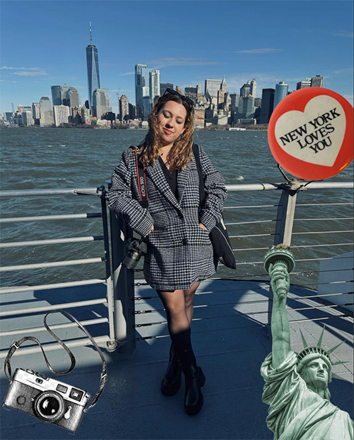

Welcome to my blog, where I explore
the thriving film photography scene in the lively streets of New York City. As a freelance photographer driven by a deep passion for capturing the city's essence, I'm always hunting for the best film camera store. Join me as I compare and contrast three unique film spots in New York.
Brooklyn Film Camera,
K & M Cameras,
Eliz Digital,
each with its own special charm and expertise.
Click the images to see my review!